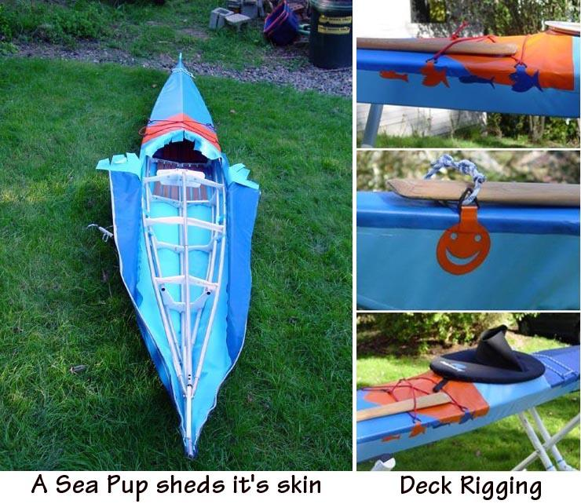

| Sea Pup | Menu Previous Page Next Page |
|
 On this folding Sea Pup, the frame is first inserted into the forward section, then the aft zipper is closed. Either a forward or aft zipper location can be used. Check out the tie downs that Mckinley designed ! |
|